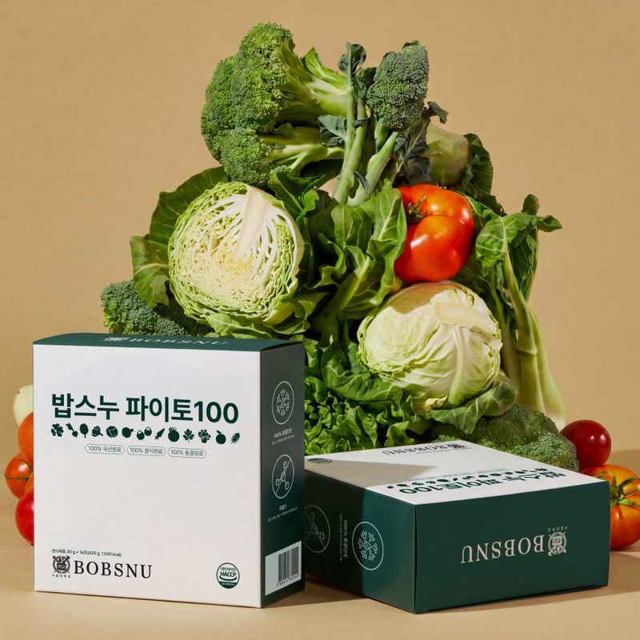

평소 먹는 대로 17개 질문에 답하면, 지금 식습관에서 가장 아쉬운 세 가지를 골라드려요.
가입은 필요 없고, 기록은 내 기기에만 저장돼요.
예시 · 45세 여성
기록이 쌓이면 추천이 다시 맞춰져요
키·체중과 평소 식습관을 물어요

탄수화물·단백질·지방에 비타민·미네랄까지 챙겨도 빠지는 영양이 있어요. 채소와 콩의 색에 든 파이토케미컬이에요.
세 가지 다 칼로리·나트륨·당은 낮추고, 단백질·칼슘·파이토케미컬은 채워요.
어떤 품목을 몇 개 받을지는 진단 결과에 따라 정해져요. 알레르기 품목은 진단할 때 고르시면 추천에서 빠져요.